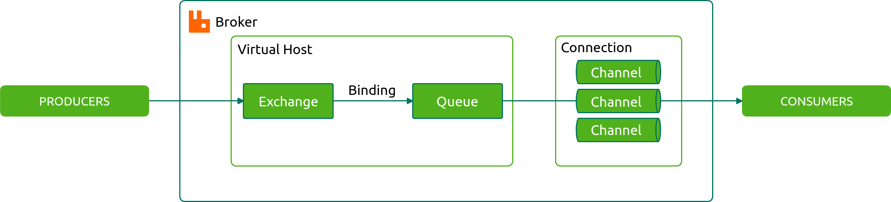

// todo(): TL;DR Series - RabbitMQ introduction
Yet another RabbitMQ introduction. If you are looking for an article about RabbitMQ, there are plenty of them and most of them are really good. Nevertheless, I decided to make my own contribution. So considering an amount of information out there about RabbitMQ, what makes this article different? I will try to keep it short, meaningful and practical while not falling into a bottomless pit of details. I do not mean that there are something that is not worth to know about, just let’s try it this way. Consider it as TL;DR for the topic.
Why you might need it
If you planning to increase the complexity of your app, you should have very strong reasons behind it. Otherwise, it can be an overkill. That’s when you probably should consider using RabbitMQ:
- If you need more flexibility. Your little services can talk to each other through RabbitMQ. It decouples your code and provides ability to write services in different programming languages.
- If you want to organize and monitor your data flow. The powerful routing system of RabbitMQ gives you an ability to implement whatever logic you might need.
- If you need durability. After the message was created it will be delivered sooner or later, if you don’t tell RabbitMQ to drop it explicitly. Also, the order of messages gets preserved.
- If it’s used in the right way it can also increase clarity, making things more obvious. So it helps to clarify data flow of your application and provide extensibility, but it gets even better(with languages like PHP) because it’s a way to make things asynchronous. Your users won’t be forced to wait too long for a response without any particular reason. You can postpone thing like sending notifications or convert an uploaded photo, everything that’s not necessary needed right away.
- If you need highly-available queues. RabbitMQ cluster can be configured without any additional software.
- RabbitMQ is highly extensible and there are a lot of external plugins available, that you can use if you need something special.
Overview
Basically, you need to extract functionality of choice into a daemon which will run infinitely in the console (consumer) waiting for a message to be sent to it (producer). If you are familiar with publish–subscribe pattern, it’s a very close concept. You send a message containing payload data and some additional information which identifies the destination of that message. There can be multiple consumers and producers, that’s why we need RabbitMQ to control message routing and guarantee the delivery.
Let’s get ourselves familiar with some key definitions of messaging systems and RabbitMQ in particular. For each one of them, I will describe briefly its purpose and available configuration options.
Broker
In the context of this article, it’s RabbitMQ. A software in charge of delivering messages, aka message-oriented middleware.
Protocol
By default RabbitMQ use Advanced Messaging Queue Protocol (AMQP), however also support a bunch of others. If you want to compare it to HTTP, then AMQP is much more specific:
- it is a wire protocol
- it is binary
- it is bidirectional, meaning both RabbitMQ and your application can send remote procedure calls.
- it has lower overhead
- it is asynchronous.
Probably the most important thing you should know about AMQP is that it provides a mechanism for delivery and processing confirmation, known as acknowledgments.
I would stick to AMQP version 0-9-1 in this article because it’s well known, commonly used and natively supported by most programming languages.
Connection
A connection is a TCP connection between your application and the RabbitMQ broker.
Channel
A channel is a virtual connection inside a connection. When you are publishing or consuming messages from a queue - it’s all done over a channel.
Users
It is possible to connect to RabbitMQ with a given username and password. Every user can be assigned permissions such as rights to read, write and configure privileges within the instance. Users can also be assigned permissions to specific virtual hosts.
Vhost, virtual host
A Virtual host provides a way to segregate applications using the same RabbitMQ instance. Different users can have different access privileges to different vhost and queues and exchanges can be created so they only exist in one vhost.
Producer
An application that sends the messages. Producers need to establish a TCP connection to create a channel and then publish messages with corresponding routing keys.
Consumer
An application that receives messages from a queue. Сonsumer connects to a queue and receives one or more messages. You can get the better throughput consuming multiple messages at a time, but it depends on your circumstances. When you have multiple consumers connected to a single queue, messages are distributed using round-robin technique.
Exchange
Exchange is a message entrypoint. Producer publishes message to an exchange and it defines where should it go next. It can clone the message and send it to multiple queues, pass it to another exchange, the are lots of possibilities, which are determined based on multiple factors.
In terms of the algorithm used to route a message four types of exchanges exists:
- Direct : Routing key matches the queue name.
- Fanout : The message is cloned and sent to all queues connected to this exchange. Routing key is ignored.
- Topic : Using wildcards the message can be routed to some of the connected queues.
- Headers : Attributes used for routing are taken from the header values, not routing key.
You can find a really good visual representation of exchange types here.
On declaring an exchange you should define a name and type as it is mandatory, there is a bunch of optional parameters though:
- passive : If set to true, server would not raise error when exchange already exists.
- durable : Durable exchange remains active upon restart. To clarify I will note that exchanges do not store messages as queues do.
- auto-delete : If there is no queues bind to an exchange it gets automatically deleted.
- arguments : Set of arbitrary arguments.
Queue
Queue in RabbitMQ is a place where messages waiting to be consumed. As in any other queue first come first served principle stand strong here. Message order is so important that if message processing raises an error within consumer, it should be rejected explicitly to be dropped or sent to the end of the queue. Otherwise, it is possible to set no-ack property when consume, so server would not wait for consumer to set acknowledgment. Most of the times it will increase performance but at the cost of reliability.
Queue stores messages in memory and optionally on disk, you can set delivery-mode parameter upon message publish to control whether message should be persisted on disk or not.
There are a number of options you can set when declaring new query, most useful of them are:
- name : You can pass name to identify the queue if the name is not specified it’s randomly generated. This can be useful when you need temporary and anonymous queues for RPC-over-AMQP.
- passive : If set to true server would not raise error when queue already exists.
- durable : Durable queue remains active and preserves persistent messages upon restart.
- exclusive : Exclusive queue may only be accessed by current connection and gets deleted when connection closes.
- auto-delete : If there are no consumers using a queue it gets automatically deleted.
- arguments : Set of arbitrary arguments. For example,
x-message-ttldefines how long a message published to a queue can live before it is discarded(Time-To-Live) andx-dead-letter-exchangeis name of an exchange to which messages will be republished if they are rejected or expire.
Binding
Bindings are rule-sets for distributing messages from exchanges to queues. Upon creating a binding the most important parameter is routing-key, as it is defining the way messages will be routed.

Message
Some structured amount of binary data that is sent from the producer to a consumer through RabbitMQ. AMQP message usually comprised of three main parts(frames):
- Method frame : For example, when we are publishing a message, our application calls Basic.Publish, and this metadata is carried in a method frame, that will tell RabbitMQ that a client is going to publish a message.
- Headers : These are properties defined by the AMQP specification and additional user properties. They are used by the broker for manipulation, routing and so on.
- Body : User defined payload of the message. Can be split into multiple different frames if the message is too big (131KB is the default frame size limit).
There are also two connection-specific types of frames: - Protocol header : This is the frame sent to establish a new connection.
- Heartbeat : Used to confirm that a given client is still alive.
Routing key
Routing key is an arbitrary string attached to a message. It should be defined by client application(producer) before dispatch to determine needed routing. For example, direct exchange compares message routing key against keys of existing bindings and send message clone on match.
Quality of service
If you have a heavy processing and use multiple consumers on one queue, then you can achieve fair dispatching of messages sending only one at a time. There is a special method to define a number of prefetched messages.
RabbitMQ simulator
If you feel that you quite don’t get the idea behind message flow you can play with different exchange type and routing options on RabbitMQ simulator.
That's all for today. Happy coding!